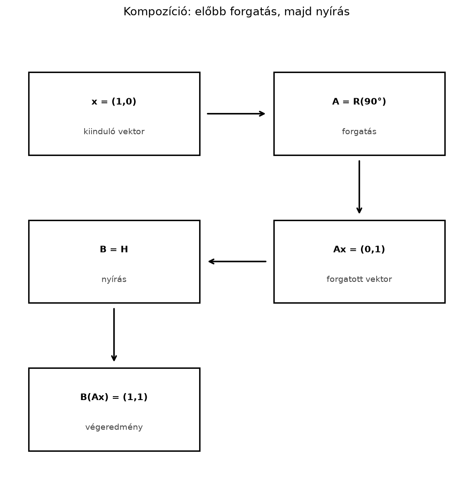

7.3 Kompozíció: a mátrixszorzás
mint transzformációk egymásutánja
7.3.1 Motiváció: két művelet
egyetlen mátrixban
Képzeljük el, hogy egy képet vagy egy alakzatot két lépésben
transzformálunk: előbb elforgatjuk
-kal,
utána pedig vízszintesen megnyírjuk. Kérdés: vajon van-e egyetlen
mátrix, amely az egész folyamatot egyszerre leírja? Ha igen,
hogyan kapjuk meg a két mátrixból?
Ez nem pusztán elméleti kérdés. Ha például egy animációban több
transzformációt kell egymás után elvégezni, kényelmes lenne azokat
egyetlen mátrixszorzássá összevonni. Ugyanez a helyzet a neurális hálók
lineáris rétegeinél is: ha nincs közben nemlineáris aktiváció, két réteg
összevonható egyetlen réteggé. Ebben az alfejezetben megmutatjuk, hogy a
transzformációk egymás utáni alkalmazása éppen a mátrixok szorzata, és
ebből megmagyarázzuk a mátrixszorzás legfontosabb szabályait.
7.3.2 Szemléletes kép: egy vektor
útja két mátrixon át
Tegyük fel, hogy az
vektort előbb az
mátrix, majd az eredményre a
mátrix hat. A folyamat lépései:

Kompozíció: előbb forgatás, majd nyírás -
A nyíl a műveleti sorrendet mutatja; a mátrixszorzás jobbról balra
olvasandó.
A példában
a
-os
forgatás mátrixa,
pedig az a nyírás, amely az
koordinátához hozzáadja az
koordinátát. A kiinduló vektor
.
A forgatás után
,
a nyírás után pedig
lesz az eredmény. A két lépés tehát egyetlen vektort juttat el
-ból
-be.
A kérdés az, hogy van-e olyan
mátrix, amelyre
minden
-re.
A válasz igen, és
nem más, mint a
mátrixszorzat.
7.3.3 Definíció: a kompozíció
mátrixa
Definíció. Legyen
egy
-es
mátrix,
pedig egy
-es
mátrix. Ha az
lineáris leképezést előbb alkalmazzuk, majd utána az
leképezést, akkor a keletkező
leképezést a két transzformáció kompozíciójának
(összetett leképezésének) nevezzük. Ennek mátrixa a
szorzat, amely
-es,
és minden
-re
teljesül:
A kifejezést jobbról balra olvassuk: az
vektorhoz legközelebb álló mátrix, azaz
,
hat először, és a tőle balra álló
hat másodszor. Ez pontosan megegyezik a függvénykompozíció
jelölésével: a belső függvény hat előbb.
7.3.4 Kidolgozott példa: előbb
forgatás, aztán nyírás vs. fordítva
Tekintsük a következő két síkbeli transzformációt:
Az
a
-os
forgatás az óramutató járásával ellentétes irányban. Az
pedig nyírás: az
koordinátát
-nal
növeli, az
koordinátát változatlanul hagyja.
Előbb forgatás, utána nyírás:
A kompozíció mátrixa:
Alkalmazzuk ezt az
vektorra:
Ez megegyezik azzal, amit lépésenként is láttunk:
,
majd
.
Előbb nyírás, utána forgatás:
Most cseréljük meg a sorrendet, és számítsuk ki az
szorzatot:
Ugyanarra az
vektorra:
A két eredmény különbözik: az első esetben
,
a másodikban
lett a végpont. Ez a számpélda is mutatja, hogy a transzformációk
sorrendje számít.
7.3.5 Indoklás: a kompozíció
mátrixa valóban a szorzat
Állítás. Ha
-es,
pedig
-es
mátrix, akkor az
transzformáció lineáris, és a mátrixa a
szorzat.
Bizonyítás. Először megmutatjuk, hogy a kompozíció
lineáris. Legyen
és
.
Mivel az
-val
és a
-vel
való szorzás is lineáris,
és
Tehát a kompozíció valóban lineáris
leképezés, ezért mátrixszal reprezentálható.
Most azt kell megmutatnunk, hogy ez a mátrix nem más, mint
.
Egy lineáris leképezés mátrixának
.
oszlopa a standard egységvektor
képét adja. A kompozícióban
ahol
az
mátrix
.
oszlopa. A
szorzat pedig éppen a
mátrix
.
oszlopa, hiszen a mátrix–vektor szorzás oszlopnézete szerint
a
oszlopainak lineáris kombinációja, az együtthatók
elemei. Így a kompozíció
.
oszlopa minden
-re
megegyezik a
szorzat
.
oszlopával, tehát a két mátrix azonos.
Az asszociativitás is természetes következmény: ha
,
és
olyan mátrixok, hogy a szorzások elvégezhetők, akkor
hiszen mindkét oldal ugyanazt a három lépésből álló kompozíciót
jelenti: előbb
,
utána
,
végül
hat. A zárójelezés csak azt mondja meg, hogy a két egymás utáni szorzást
milyen csoportosításban számoljuk ki, de magát a leképezések sorrendjét
nem befolyásolja.
7.3.6 Forgatások kompozíciója: a
szögek összeadódnak
A kompozíció egyik szép levezethető következménye, hogy két forgatás
egymás utáni alkalmazása egyetlen forgatás, amelynek szöge a két szög
összege.
Tétel. Legyen
és
két síkbeli forgatás mátrixa, ahol
Ekkor
Bizonyítás. Végezzük el a mátrixszorzást:
A szorzat első sorának első eleme:
A trigonometrikus azonosság szerint ez
éppen
.
Az első sor második eleme:
A második sor első eleme:
a második sor második eleme pedig:
Így
A levezetésből az is látszik, hogy forgatások esetén a sorrend
felcserélhető (a szorzás kommutatív):
.
Ez azonban általában nincs így, ahogy a kidolgozott példa is
mutatta.
7.3.7 Számítógépes ellenőrzés
NumPy-ban
Az alábbi kód a kidolgozott példa mátrixait, a kétféle sorrendben
vett szorzatot és a vektorokra gyakorolt hatást ellenőrzi.
import numpy as npR90 = np.array([[0, -1], [1, 0]]) # 90 fokos forgatásS = np.array([[1, 1], [0, 1]]) # nyírásBA = S @ R90 # előbb R90, majd SAB = R90 @ S # előbb S, majd R90x = np.array([1, 0])print("BA =\n", BA)print("AB =\n", AB)print("BA x =", BA @ x)print("AB x =", AB @ x)
A várt kimenet:
BA =
[[ 1 -1]
[ 1 0]]
AB =
[[ 0 -1]
[ 1 1]]
BA x = [1 1]
AB x = [0 1]
A két szorzat mátrixa és a két eredményvektor is különbözik, ami
megerősíti, hogy a sorrend nem cserélhető fel.
7.3.8 Kapcsolat a gépi
tanulással
A kompozíció fogalma közvetlenül használatos a neurális hálók
lineáris rétegeinél. Egy dense réteg matematikai alakja
ahol
a súlymátrix,
pedig az eltolásvektor. Ha két ilyen réteget kötünk össze
nemlineáris aktiváció nélkül, akkor
Az eredmény tehát egyetlen affin leképezés, amelynek súlymátrixa
,
eltolásvektora pedig
.
Shape-ekkel: ha
és
,
akkor a szorzat
.
Batch-alakban az
bemenetre:
Ez azt jelenti, hogy nemlinearitás nélkül két lineáris réteg nem ad
több kifejezőerőt, mint egyetlen lineáris réteg. A gyakorlatban ezért
helyeznek el aktivációs függvényeket a rétegek közé: a nemlineáris
függvény „megtöri” a kompozíciót, és így a többrétegű háló már nem
vonható össze egyetlen lineáris réteggé. Ez a megfigyelés a későbbi,
neurális hálókat tárgyaló alfejezetekben is fontos lesz.
7.3.9 Tipikus hibák és
félreértések
A sorrend felcserélése: a
és az
szorzat általában különböző, mert a transzformációk sorrendje számít. A
kidolgozott példában a forgatás és a nyírás cseréje különböző
eredményvektort adott.
A jobbról balra olvasás elfelejtése: a
kifejezésben sokan balról jobbra gondolkodnak, és azt hiszik, hogy
hat előbb. A helyes sorrend: előbb
,
utána
,
mert
a jobb szélen áll.
Shape-hiba: a
szorzat csak akkor értelmezhető, ha
sorainak száma megegyezik
oszlopainak számával, azaz
-es
és
-es.
Ha fordított sorrendben,
-t
próbálunk kiszámolni, az csak akkor lehetséges, ha
,
és általában akkor is más eredményt ad.
7.3.10 Feladatok
7.3.10.1 (a)
Magyarázd meg, miért olvassuk a
kifejezést jobbról balra! Melyik transzformáció hat először?
7.3.10.2 (b)
Legyen
és
a fenti példában. Számold ki a
és az
mátrixot, majd alkalmazd mindkettőt az
vektorra. Hasonlítsd össze a kapott vektorokat!
7.3.10.3 (c)
Készítsd el az
nyújtást és az
forgatást. Számítsd ki az
és az
szorzatot NumPy segítségével, majd alkalmazd mindkettőt az
vektorra. Melyik esetben lesz az eredmény
,
és melyikben
?
7.3.10.4 (d)
Mutasd meg, hogy két tengelyes tükrözés kompozíciója forgatás:
.
Miért lesz a kompozíció forgatás, és miért nem tükrözés?
7.3.11 Megoldások
7.3.11.1 (a)
A
kifejezésben az
-hez
legközelebb eső
mátrix hat először, mert a mátrixszorzás definíciója szerint előbb az
szorzatot számoljuk ki, majd az eredményre alkalmazzuk a
-t.
Ez megegyezik a
függvénykompozícióval, ahol a belső függvény hat előbb.
7.3.11.2 (b)
A mátrixok:
Az
vektorra:
mert lépésenként
,
majd
.
A másik sorrendben:
mert
,
majd
.
Az eredmények valóban különbözők.
7.3.11.3 (c)
A NumPy-kód: ```python import numpy as np
F = np.array([[2, 0], [0, 1]]) # x-tengely menti nyújtás R =
np.array([[0, -1], [1, 0]]) # 90 fokos forgatás
FR = F @ R # előbb R, majd F RF = R @ F # előbb F, majd R
e1 = np.array([1, 0])
print(“FR =\n”, FR) print(“RF =\n”, RF) print(“FR e1 =”, FR @ e1)
print(“RF e1 =”, RF @ e1) Várt kimenet:text FR = [[ 0 -2] [
1 0]] RF = [[ 0 -1] [ 2 0]] FR e1 = [0 1] RF e1 = [0 2] ``` Az
esetben előbb forgatjuk az
-et
-be,
majd az
-koordinátát
nyújtjuk, de a
-ból
marad, így az eredmény
.
Az
esetben előbb nyújtjuk az
-et
-vá,
majd forgatjuk, így
lesz az eredmény.
7.3.11.4 (d)
Két tengelyes tükrözés szorzata irányításváltó × irányításváltó =
irányítástartó, determinánsa
,
ezért forgatás. A szögekkel számolva a
szögű tengelyre tükrözés után a
szögű tengelyre tükrözés a
szögű forgatást adja:
.
A kompozíció tehát forgatás, nem tükrözés; a tükrözések nem alkotnak
zárt csoportot a kompozícióra.
7.3.12 Rövid összefoglaló
Ha előbb az
,
majd a
mátrix által adott lineáris transzformációt alkalmazzuk, a kompozíció
mátrixa a
szorzat, és fennáll, hogy
minden
-re.
A kifejezést jobbról balra olvassuk: az
-hez
közelebbi mátrix hat először. A mátrixszorzás asszociatív, mert a
függvénykompozíció asszociatív, de általában nem kommutatív, mert a
transzformációk sorrendje számít. Két forgatás kompozíciója viszont
forgatás, és a szögek összeadódnak:
.
Az aktiváció nélküli lineáris rétegek is összevonhatók:
lesz a közös súlymátrix.